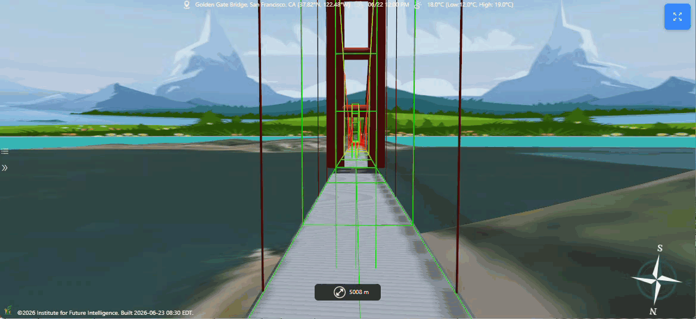
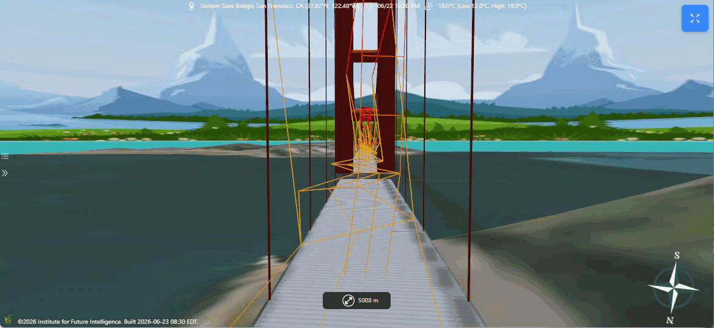
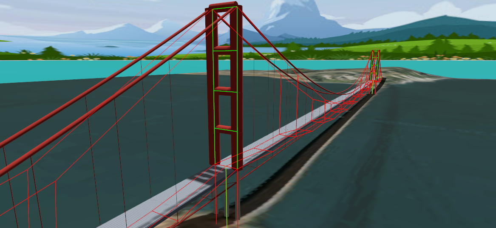

The Bridge That Bends
Modeling and designing earthquake- and wind-resistant bridges in Aladdin.
A bridge looks like the most solid thing in the world, but the good ones are quietly in motion. When an earthquake shakes the ground or a gale pushes against the deck, a well-designed bridge does not resist by being rigid — it survives by bending, swaying, and letting the energy pass through without tearing itself apart. Getting that behavior right is a problem of structural dynamics, and it is notoriously hard to see with the naked eye: the forces are invisible, the motions are fast, and the difference between a design that stands and one that collapses can come down to a single natural frequency. We have been building a structural-engineering workbench into Aladdin so that anyone can draw a bridge, subject it to earthquakes and wind, and watch how it responds — all in a web browser, alongside the solar and wind-energy tools Aladdin is already known for. Below is a live, interactive model of a suspension bridge in that workbench. Explore it first, then read on to see what is happening underneath the surface.
The rest of this article walks through how a bridge like this comes together in Aladdin: choosing a structural form, building it parametrically, analyzing how it carries its own weight and traffic, finding the natural rhythms that govern its response, shaking it with a real earthquake, pushing it with the wind, and finally letting the computer search for a lighter, safer design.
Why bridges are a dynamics problem, not just a statics problem
The first thing every engineering student learns about a bridge is how it holds up its own weight and the traffic crossing it — a question of statics. That part matters, and Aladdin computes it, but it is not what brings bridges down. The famous failures — the Tacoma Narrows Bridge twisting itself apart in a moderate wind, spans dropping in an earthquake — are failures of dynamics. A structure has natural frequencies at which it "wants" to vibrate, just as a guitar string has a pitch. Feed energy into one of those frequencies — a gust that matches the deck's torsional rhythm, ground shaking that matches the tower's sway — and the motion builds on itself until something breaks.
This is exactly the kind of physics that is hard to reason about with intuition alone and easy to get wrong. The whole point of a modeling tool is to make the invisible visible: to let you see the shape a bridge deforms into, hear (in a manner of speaking) the frequencies it resonates at, and watch it ride out a simulated earthquake before a single ton of steel is ordered. Aladdin does this with a proper finite element model of the structure — not a cartoon — so the numbers mean something.
Building a bridge in Aladdin
You start by dropping a bridge onto the ground and dragging it out to the span you want, the same direct way you place a building or a solar array. From there a single design dialog lets you shape it. The most consequential choice is the structural form, and Aladdin supports the five that account for nearly every bridge you have ever crossed: a plate-girder bridge for short and medium spans, a truss for stiff economical crossings, a tied arch, a cable-stayed bridge with its fan of cables running straight to the towers, and a suspension bridge with a draped main cable and a curtain of vertical hangers for the longest spans of all. Switching between them rebuilds the entire superstructure in place while keeping your deck, so you can compare forms on the same crossing.
Everything is parametric. Span count, deck width, girder depth, deck thickness, pier diameter, truss height, arch rise, tower height — each is a number you can turn, and the 3D model and its underlying engineering mesh update together, because they are generated from the same description. That last point is the important one: the bridge you see on screen and the bridge Aladdin analyzes are not two separate things that might drift apart. The girders, diaphragms, piers, cables, and hangers you look at are the finite elements being solved. What you draw is what you analyze.

Analyzing the structure
Under the hood, Aladdin represents the bridge as a full three-dimensional frame: every joint carries six degrees of freedom — it can move in three directions and rotate about three axes — and every member is a beam element that resists stretching, bending, and twisting. This is the same class of model a practicing structural engineer would build, not a simplified two-dimensional sketch, which matters because real bridges deform in three dimensions at once: a deck can sag, sway sideways, and twist all in the same instant.
The static analysis applies the structure's own dead weight and the traffic load and solves for how every joint moves and how much force every member carries. Aladdin then reports the results the way an engineer needs to read them: the maximum deflection of the deck, checked against the usual span-over-ratio serviceability limits, and a demand-to-capacity ratio for each member — the fraction of a member's strength that the load actually uses. A ratio below one means the member is safe; above one means it is overstressed. Crucially, Aladdin checks capacity two ways, against the material's strength and against buckling, because slender compression members like arch ribs and truss diagonals often fail by buckling long before they run out of raw strength.
The dynamic side begins with modal analysis, which finds the bridge's natural frequencies and the mode shapes that go with them — the fundamental sway, the first vertical bending of the deck, the first torsional twist, and so on up the spectrum. These modes are the vocabulary of everything that follows: an earthquake or a gust excites the structure through its modes, so knowing them tells you where the bridge is vulnerable. Aladdin animates each mode shape right on the model, so a twist mode that a wind could catch, or a sway mode that lines up dangerously with typical earthquake energy, is something you can actually see rather than infer from a table of numbers.
Shaking it with an earthquake
This is where the workbench earns its name. Aladdin can subject the bridge to ground motion two complementary ways. The first is response-spectrum analysis, the workhorse of seismic design codes: you pick a peak ground acceleration for the site and a damping level, Aladdin builds a design spectrum, combines the bridge's modal responses statistically, and reports the resulting member forces and demand-to-capacity ratios — a fast verdict on whether the design has enough capacity for the expected shaking. The second is a full time-history simulation, which marches the whole structure through an actual recorded earthquake, step by step, and lets you watch it move.
For that we use the ground motion recorded during the 1940 El Centro earthquake — one of the most-studied accelerograms in the history of the field, with a peak acceleration of about a third of gravity. Press "shake" and Aladdin plays the earthquake through the bridge, reporting the peak deck displacement and the base shear driven into the foundations while replaying the motion as a looping 3D animation of the structure swaying and rebounding. Seeing a span ride out El Centro, or fail to, communicates something a safety factor on a spreadsheet never will.

Aladdin also models one of the most elegant ideas in earthquake engineering: base isolation. Instead of fighting the earthquake with brute stiffness, an isolated bridge sits on flexible bearings that deliberately lengthen its natural period, tuning the structure away from the frequencies where the ground shakes hardest. The deck then rides gently above the moving ground rather than being whipped by it. Turn isolation on in the design dialog and give it a target period, and you can watch the base shear — the horizontal force the earthquake drives into the foundations — drop sharply, at the cost of larger but far gentler deck movement. It is the physical embodiment of the article's title: the bridge moves precisely so that it can keep standing.
Wind, drift, and flutter
Earthquakes are not the only thing that makes a long bridge move. Wind does too, and for the longest spans it is the governing danger. Aladdin's wind analysis starts with the steady part: it applies the drag of a given wind speed as a sideways load on the deck, piers, towers, and arch ribs, and reports the resulting sideways drift and member demand. But the steady push is the easy part. The subtle killer is flutter — the self-feeding coupling of a deck's vertical and torsional vibrations that destroyed the original Tacoma Narrows Bridge, where a moderate, steady wind pumped energy into a twisting motion that grew until the deck tore apart.
Predicting flutter means predicting the wind speed at which that coupling turns unstable, and Aladdin computes it from the aerodynamic theory of a thin airfoil rather than a rule of thumb, using the deck's own vertical and torsional frequencies and its mass. We checked the method against a published long-span-bridge benchmark and it lands in the right range. The wind panel flags the critical flutter speed alongside the operating wind, and warns when a vortex-shedding lock-in — a milder resonance where the wind sheds vortices at one of the bridge's natural frequencies — falls uncomfortably close to everyday wind speeds. For a long, slender deck, these aerodynamic checks are every bit as important as the earthquake ones.

Letting the computer search for a better design
Once a bridge can be scored — safe or not under gravity, traffic, earthquake, and wind — a natural next question is whether a lighter, cheaper design would pass all the same checks. Aladdin answers it with an optimizer. A genetic algorithm evolves the bridge's sizing — girder depth, deck thickness, pier diameter, tower or truss or arch height, isolation period — to minimize the total material cost of steel, cable, and concrete, while respecting every constraint: static strength, seismic demand, and deflection limits. A design that violates a constraint is penalized so heavily that any feasible design beats it, so the search always drives toward something that actually stands up.
The satisfying part is that you can watch it happen. The optimizer seeds its first generation with your current design, so its answer is never worse than where you started, and then as the generations tick by the bridge on screen visibly morphs — girders slimming, piers narrowing, proportions shifting — while a chart tracks the falling cost and the demand-to-capacity ratios that keep it honest. It turns design from a matter of guessing-and-checking into a conversation with the physics.
Conclusion
Bridges are where structural engineering meets the raw forces of nature — the shove of the wind, the heave of the ground — and the best designs answer those forces not with stubbornness but with a carefully tuned willingness to move. Aladdin now lets anyone explore that idea hands-on: draw a bridge in one of five forms, load it with its own weight and traffic, find its natural rhythms, run a real earthquake through it, test it against wind and flutter, and let an optimizer hunt for a leaner design — all in a browser, with nothing to install. It began as a tool for designing clean-energy systems, and it is growing into a place to understand the built environment more broadly. Because it runs in the browser, a design is a link away from a classroom, a colleague, or a community meeting — and shared understanding of how our infrastructure survives earthquakes and storms is exactly the kind of thing that, given enough people who care, turns into action.
← Back to Aladdin